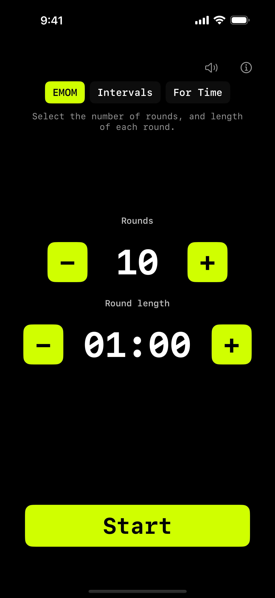
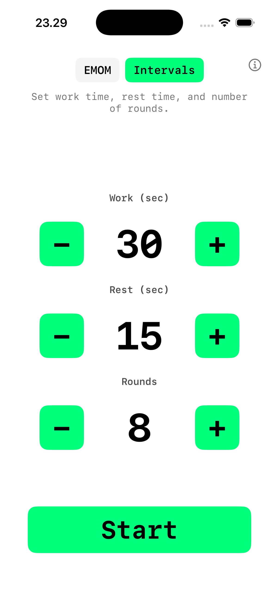
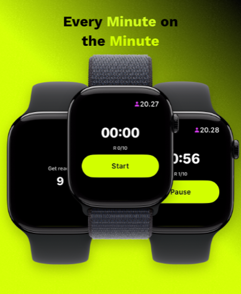
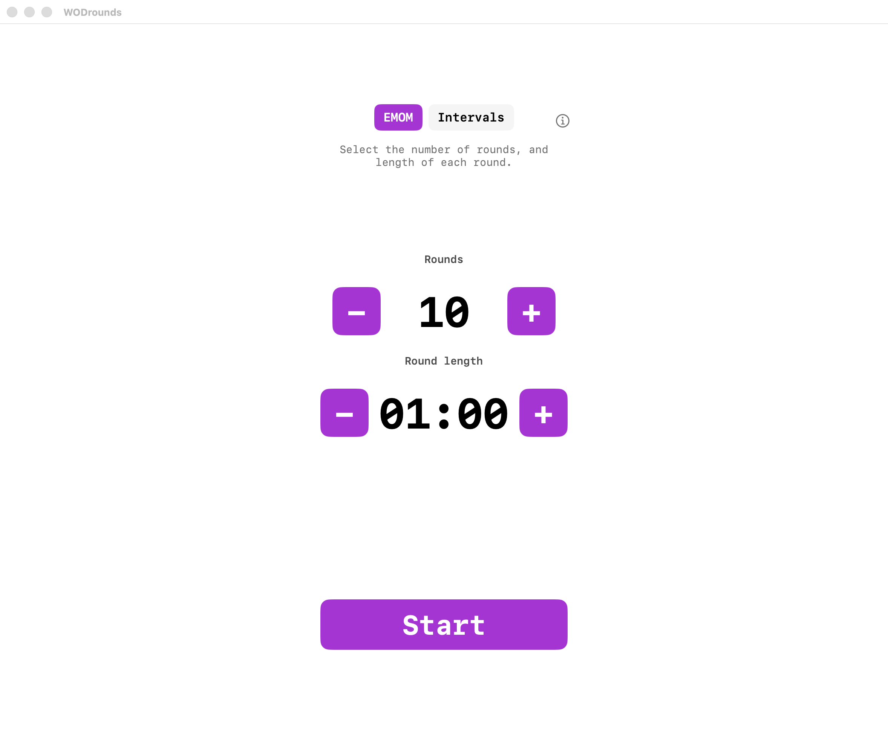
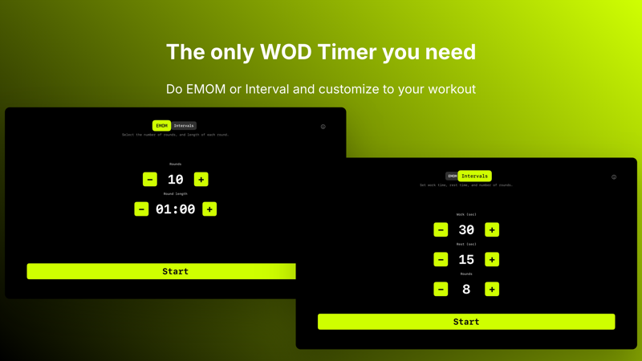
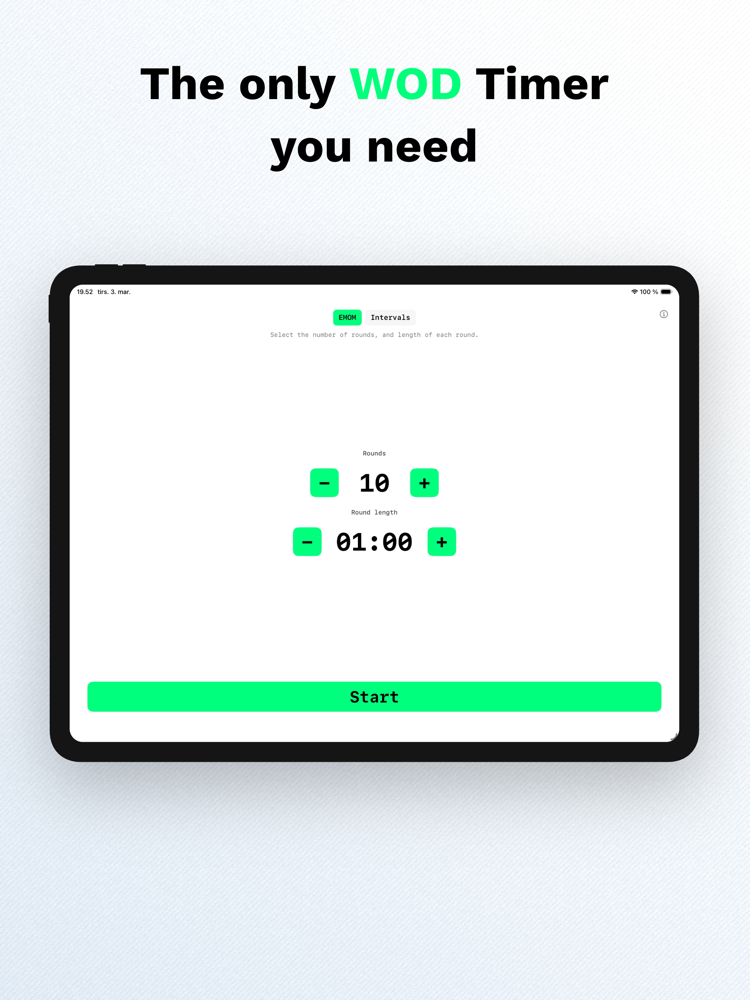

EMOM & Interval Timer
The only
WOD timer
you need.
Built for CrossFit, HIIT and Tabata. Start on iPhone, follow on Apple Watch. Or train from your Mac, iPad and Apple TV. Zero setup, zero accounts, zero noise.
Download on the App Store iPhone · iPad · Apple Watch · Mac · Apple TV

iPhone & Apple Watch
Start a workout on your iPhone. Your Apple Watch picks it up instantly. Or run the timer directly on the Watch when your phone is in the locker.



Built for the workout
-
EMOM Timer
Every Minute on the Minute. Set 1 to 120 rounds with custom round length from 30 seconds to 9:30. Large numbers, one-handed use.
-
Interval Timer
Configure work time, rest time and rounds. Tabata-style 20/10 × 8 is just a preset away. Perfect for HIIT, circuit training and Tabata.
-
iPhone → Watch
Start a timer on iPhone and follow it live on Apple Watch. Same countdown, same round, same state. Or run standalone on the Watch.
-
Apple Health
Completed workouts save to Apple Health as HIIT sessions. Your Activity rings and Fitness app reflect every workout. iOS only.
Every screen. Same timer.
WODrounds is a native app on every Apple platform. Not a web wrapper. Built with SwiftUI for each device, with the same engine under the hood.

Mac
Compact window that stays out of the way. Dark and light mode. Perfect for timing from your desk.

Apple TV
Your timer on the big screen. Navigate with the Siri Remote. Visible from across the gym or garage.

iPad
Full-screen timer optimized for iPad. Prop it up, start your workout, and see the countdown from anywhere in the room.
EMOM, Intervals
or For Time.
Three modes, zero bloat. EMOM gives you a round counter with a configurable minute. Intervals give you work, rest and rounds. For Time counts up from zero so you can race the clock, with an optional cap. Every mode has a 10-second countdown to get ready.
- 10-second countdown before every workout
- Halfway and ten-seconds voice cues, plus a 3-2-1 countdown
- Haptic feedback on round transitions
- Pause, resume or cancel anytime
A tool, not a feed
I built WODrounds because every timer app I tried wanted me to create an account, watch ads, or subscribe to a plan. I just needed a timer. So I made one.
- No sign-in or accounts required
- No ads or in-app usage analytics; optional crash reports on iOS (privacy); this site uses Umami for aggregate visits only
- Pay once, own it forever — no subscription, no recurring fees
- No cloud database. Everything stays on your device
- Optional Apple Health write-only on iOS
Frequently asked questions
- What is an EMOM timer?
- EMOM stands for Every Minute on the Minute. You perform a set of exercises at the start of each minute and rest for the remaining time. WODrounds lets you set 1 to 120 rounds with custom round lengths from 30 seconds to 9 minutes 30 seconds.
- Can I use WODrounds for Tabata workouts?
- Yes. Tabata is a type of interval training with 20 seconds of work and 10 seconds of rest for 8 rounds. In WODrounds, switch to Intervals mode and set work to 20, rest to 10, and rounds to 8.
- Can I time a For Time WOD?
- Yes. Switch to For Time mode and the clock counts up from zero. Press Stop when you finish and your time is saved. You can set an optional time cap (0:30 to 60:00) so the timer stops automatically, or leave it uncapped to run until you stop it.
- Does WODrounds work on Apple TV?
- Yes. WODrounds is a native app on Apple TV. Navigate with the Siri Remote and see your timer on the big screen. It supports EMOM, Intervals and For Time with sound cues.
- Do I need an iPhone to use the Apple Watch app?
- The Watch app can sync with your iPhone in real time, but it also works standalone. You can start and run timers directly on the Watch without your phone nearby.
- Does WODrounds save my workouts?
- On iPhone, completed workouts are saved to Apple Health as HIIT sessions if you grant permission. This is optional and write-only. No workout data is sent to any server.
- How much does WODrounds cost? Is there a subscription?
- WODrounds is a one-time purchase — pay once and own it forever. No subscription, no in-app purchases, no ads. All features are included. The price is US$2.99 (it varies by region and currency).
- Does WODrounds or this website track me?
- The app does not use marketing analytics or ad trackers. On iPhone, crash reports may be sent to Sentry to fix bugs. This website uses Umami for aggregate page views. Neither receives your workout programming. See the Privacy Policy for details.
Start timing your workout
Available on the App Store for iPhone, iPad, Apple Watch, Mac and Apple TV.
Download WODrounds Works offline. No account needed.